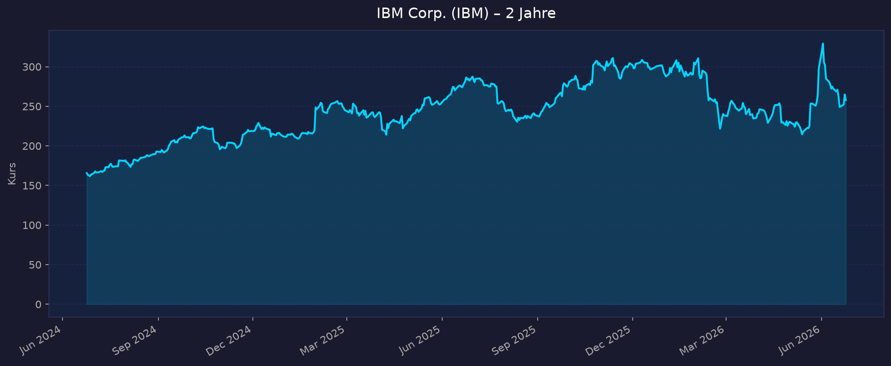
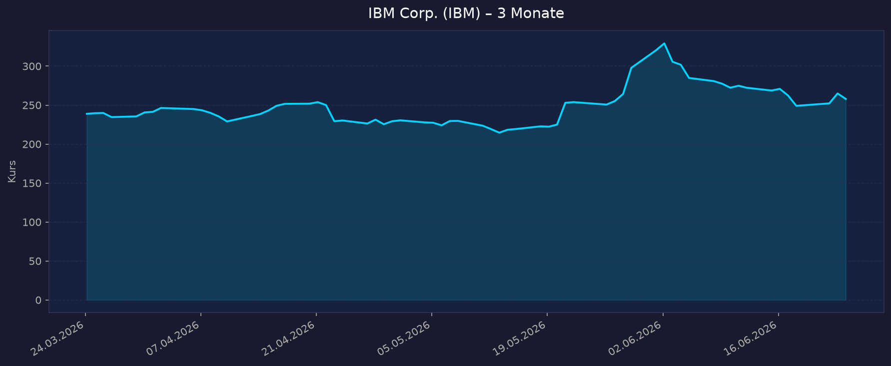

📈 1. Kursentwicklung
Aktueller Kurs: 297,80 USD | Veränderung heute: +12,71% | 52W-Hoch: 324,90 USD | 52W-Tief: 212,34 USD
Chart – 2 Jahre

Chart – 3 Monate

| Zeitraum | Kurs Start | Kurs Ende | Veränderung |
|---|---|---|---|
| 2 Jahre | 156,75 USD | 297,80 USD | +89,9% |
| 3 Monate | 237,62 USD | 297,80 USD | +25,3% |
| 52-Wochen-Hoch | — | 324,90 USD | — |
| 52-Wochen-Tief | — | 212,34 USD | — |
Hinweis: Der außerordentliche Tagesanstieg von +12,71% am 29.05.2026 wurde durch IBMs Ankündigung eines >$10 Mrd. Quantencomputing-Investitionsprogramms sowie Bestätigung des Outperform-Ratings durch Wedbush (Kursziel $320) ausgelöst.
💹 2. KGV-Entwicklung (Kurs-Gewinn-Verhältnis)
Aktuelles KGV (trailing): 26,38 | Forward P/E: 22,13
| Zeitraum | KGV | Einordnung |
|---|---|---|
| Aktuell (Mai 2026) | 26,38 | Leicht unter 3J-Durchschnitt |
| Ende 2025 | 26,10 | Stabil |
| 3J-Durchschnitt | 31,06 | IBM handelte historisch teurer |
| 5J-Durchschnitt | 35,72 | Deutlich höher gewesen |
| 10J-Durchschnitt | 25,97 | Aktuell am historischen Mittel |
| Höchstwert (Sept. 2022) | 83,67 | Ausreißer |
| Tiefstwert (März 2020) | 10,91 | Pandemie-Tief |
Bewertung: IBM handelt aktuell nahe am 10-Jahres-Durchschnitt (25,97) — weder teuer noch günstig. Der deutliche Rückgang vom 3J-Mittel (31,06) zeigt, dass die Gewinne stärker gestiegen sind als der Kurs — positives Signal. Der Forward P/E von 22,13 deutet auf weiter wachsende Gewinnerwartungen hin.
💰 3. Sales Multiple (Kurs-Umsatz-Verhältnis / P/S)
Aktuelles P/S-Verhältnis: 4,06 | P/B-Verhältnis: 8,49
| Zeitraum | P/S Ratio | Einordnung |
|---|---|---|
| Aktuell (Mai 2026) | 4,06 | Moderat für IT-Services |
| Branchenvergleich IT-Services | ~2–5 | Im normalen Bereich |
Trend: Steigend — IBM konnte durch Umsatzwachstum (+6–12% pro Jahr) und Kurssteigerung ein höheres P/S rechtfertigen. Die Marge verbesserte sich von 9,59% (FY2024) auf 15,57% (TTM Mar '26), was das höhere Multiple begründet.
📊 4. Handelsvolumen (Trading Volume)
| Zeitraum | Ø Tagesvolumen | Auffälligkeiten |
|---|---|---|
| 3-Monats-Durchschnitt | 6.999.055 Aktien | Normal |
| 10-Tage-Durchschnitt | 12.709.380 Aktien | Stark erhöht |
| Heute (29.05.2026) | Deutlich über Ø | Quantencomputing-Ankündigung |
Volumentrend: Das 10-Tage-Volumen ist nahezu doppelt so hoch wie der 3-Monats-Schnitt — ein klares Signal erhöhter Marktaktivität rund um die Think-2026-Konferenz und Quantencomputing-Ankündigungen. Solche Volumenspitzen begleiten häufig nachhaltige Trendwechsel, können aber auch schnell wieder abflauen.
🏦 5. Insider Trades (letzte 2 Jahre)
| Datum | Name | Funktion | Art | Anzahl Aktien | Wert (USD) |
|---|---|---|---|---|---|
| 26.02.2026 | James J. Kavanaugh | CFO & Senior VP | Award (RSU) | 10.364 RSU | ~$2,98 Mio. |
| 26.02.2026 | James J. Kavanaugh | CFO & Senior VP | Award (Optionen) | 41.455 Optionen | — |
| 31.12.2025 | Director (anonym) | Board Director | Deferred Fee Shares | 330 Aktien | $296,21/Stk. |
| 14.11.2025 | VP Controller | VP, Controller | Verkauf | 350 Aktien | ~$85.000 |
| 06.11.2025 | Senior VP | Senior Vice President | Transaktion | 700 Aktien | — |
3-Monats-Überblick: Überwiegend aktienbasierte Vergütungen (RSUs, Optionen, Deferred Compensation) — keine klaren Netto-Käufe am freien Markt. Kleine Verkäufe auf VP-Ebene typisch für Steueroptimierung nach Vesting.
2-Jahres-Überblick: Insider-Besitz ist mit 0,09% sehr gering — typisch für Large-Cap-Unternehmen. Keine bedeutenden Insiderkäufe am offenen Markt, aber auch keine aggressiven Verkäufe.
Quelle: SEC Edgar / Stocktitan
🩳 6. Short-Positionen
Aktuelle Short Quote: ~2,86% des Streubesitzes (Float)
| Zeitraum | Short Interest | Veränderung |
|---|---|---|
| Aktuell (Mai 2026) | 2,62–2,86% Float / 26,86 Mio. Aktien | — |
| Peer-Gruppe Ø | 4,93% | IBM deutlich darunter |
| Short Ratio | 3,89 Tage | Normal |
Einschätzung: Niedrig — IBM hat deutlich weniger Short-Interesse als die Peer-Gruppe (2,86% vs. 4,93%). Das signalisiert, dass institutionelle Leerverkäufer kaum auf fallende Kurse wetten. Kein Short-Squeeze-Kandidat, aber auch kein Warnsignal.
🗞️ 7. Aktuelle Nachrichten (Mai 2026)
| Datum | Quelle | Nachricht | Relevanz |
|---|---|---|---|
| 29.05.2026 | Wedbush / Gurufocus | Dan Ives reiteriert "Outperform", Kursziel $320 | Hoch |
| 29.05.2026 | TheStreet / Timothy Sykes | IBM kündigt >$10 Mrd. Quantencomputing-Investment an, fehlertolerantes System bis 2029 | Hoch |
| 29.05.2026 | Finanzen.ch | IBM-Aktie +12,71%: Quantencomputing-Offensive weckt neue Fantasie | Hoch |
| 28.05.2026 | onvista | IBM als "unverzichtbarer Taktgeber im KI-Zeitalter" | Mittel |
| 06.05.2026 | IBM Newsroom | Think 2026: IBM Enterprise Advantage — neue KI-Funktionen für hybride Umgebungen | Mittel |
| 05.05.2026 | IBM Newsroom | IBM Sovereign Core allgemein verfügbar — digitale Souveränität in hybriden Clouds | Mittel |
| 05.2026 | CNBC / CNN | Gen-AI Book of Business >$12,5 Mrd. kumuliert | Hoch |
| 04.2026 | SEC Filing | $11,6 Mrd. Confluent-Akquisition abgeschlossen | Mittel |
Sentiment: Überwiegend positiv — starke Quartalsergebnisse, massive KI- und Quantencomputing-Investitionen, positive Analystenreaktionen dominieren das Bild. Die kurze Schwächephase unter der 100-Tage-Linie scheint überwunden.
📋 8. Letzte 3 Quartalsberichte
Q1 2026 (berichtet: 22. April 2026)
| Kennzahl | Ist | Erwartung | Abweichung |
|---|---|---|---|
| Umsatz (Revenue) | $15,9 Mrd. | $15,8 Mrd. | +$0,1 Mrd. Beat |
| EPS non-GAAP | $1,91 | $1,81 | +$0,10 Beat (+5,5%) |
| EPS GAAP | $1,28 | — | — |
| YoY Umsatzwachstum | +9% | — | — |
| Software Revenue | $7,1 Mrd. (+11%) | — | — |
| Infrastructure | $3,33 Mrd. (+15%) | — | — |
| IBM Z Mainframe | +51% YoY | — | — |
| Gen-AI Book of Business | >$7 Mrd. kumuliert | — | — |
| Free Cashflow | — | — | — |
Guidance: >5% Umsatzwachstum für FY2026 (konstante Währung); +$1 Mrd. FCF-Wachstum YoY bestätigt. Kursreaktion: Positiv; Basis für den späteren Anstieg im Mai.
Q4 2025 (berichtet: 28. Januar 2026)
| Kennzahl | Ist | Erwartung | Abweichung |
|---|---|---|---|
| Umsatz (Revenue) | $19,69 Mrd. | $19,23 Mrd. | +$0,46 Mrd. Beat (+2,4%) |
| EPS non-GAAP | $4,52 | $4,32 | +$0,20 Beat (+4,6%) |
| YoY Umsatzwachstum | +12% | — | — |
| Software Revenue | $9,0 Mrd. (+14%) | — | — |
| Infrastructure | $5,1 Mrd. (+21%) | — | — |
| IBM Z Mainframe | +67% YoY | — | — |
| Gen-AI Book of Business | >$12,5 Mrd. kumuliert | — | — |
| Free Cashflow FY2025 | $14,7 Mrd. | — | Dekade-Hoch |
Guidance: FY2026 >5% Umsatzwachstum; FCF +$1 Mrd. YoY. Kursreaktion: Positiv — Aktie stieg nach Earnings.
Q3 2025 (berichtet: 22. Oktober 2025)
| Kennzahl | Ist | Erwartung | Abweichung |
|---|---|---|---|
| Umsatz (Revenue) | $16,33 Mrd. | $16,09 Mrd. | +$0,24 Mrd. Beat (+1,5%) |
| EPS non-GAAP | $2,65 | $2,44 | +$0,21 Beat (+8,6%) |
| YoY Umsatzwachstum | +9% (+7% konstante Währung) | — | — |
| Software Revenue | $7,2 Mrd. (+10%) | — | — |
| Consulting Revenue | $5,3 Mrd. (+3%) | — | — |
| Infrastructure | $3,6 Mrd. (+17%) | — | — |
| FCF (9 Monate kumuliert) | $7,2 Mrd. | — | Rekordwert |
Guidance angehoben: FY2025 >5% Umsatzwachstum; FCF ~$14 Mrd. Kursreaktion: Positiv — Aktie stieg nach Earnings.
📝 Gesamteinschätzung
✅ Stärken
- Konstante Earnings-Beats: 3 Quartale in Folge über Umsatz- und EPS-Erwartungen
- KI-Momentum: Gen-AI Book of Business von $0 auf >$12,5 Mrd. in wenigen Quartalen — stärkste Wachstumsdynamik im Portfolio
- IBM Z Mainframe-Zyklus: +51–67% Wachstum zeigt Superzyklus; treibt Infrastructure-Segment
- $10 Mrd. Quantencomputing-Investition: Langfristiger Burggraben, einzigartiges Differenzierungsmerkmal
- Defensive Charakteristik: Beta 0,58, stabile Dividende ($6,76/Aktie, ~2,3% Rendite)
- Niedriges Short-Interest (2,86%): Markt ist nicht pessimistisch positioniert
⚠️ Risiken
- Consulting schwächelt: +3% in Q3 2025 — struktureller Gegenwind durch KI-Automatisierung des Beratungsgeschäfts
- Hoher Schuldenstand: $11,6 Mrd. Confluent-Akquisition erhöht Nettoverschuldung erheblich
- Bewertung nicht günstig: P/E 26, P/S 4, P/B 8,5 — keine Schnäppchenbewertung mehr
- Mainframe-Zyklizität: IBM Z-Boom könnte sich abschwächen sobald Zyklus dreht
- Kursziel-Diskrepanz: Ø Analysten-Kursziel $277,68 liegt unter aktuellem Kurs von $297,80
- Großakquisition Integration: Confluent-Integration birgt Ausführungsrisiken
📌 Fazit
IBM hat sich in den letzten zwei Jahren mit +90% Kursanstieg von einem stagnierenden IT-Riesen zu einem dynamischen KI- und Hybrid-Cloud-Unternehmen gewandelt. Die Fundamentaldaten sind stark — drei Quartale mit Earnings-Beats, dekadenhohes Free Cashflow, massives KI-Wachstum. Das $10 Mrd. Quantencomputing-Investment positioniert IBM für eine langfristige Technologieführerschaft. Das aktuelle Kursniveau erscheint fair bewertet bis leicht überdehnt nach dem heutigen Sprung von +12,71%; kurzfristige Konsolidierung wäre gesund.
Datenquellen: Yahoo Finance (yfinance) · StockAnalysis · Macrotrends · SEC Edgar · IBM Newsroom · CNBC · Investing.com · Gurufocus · Shacknews · Wedbush · Finanzen.ch · onvista · MarketBeat · Fintel Kein Anlageberatung — rein informative Auswertung öffentlicher Daten